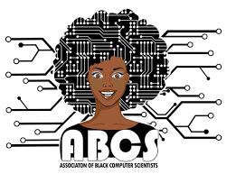
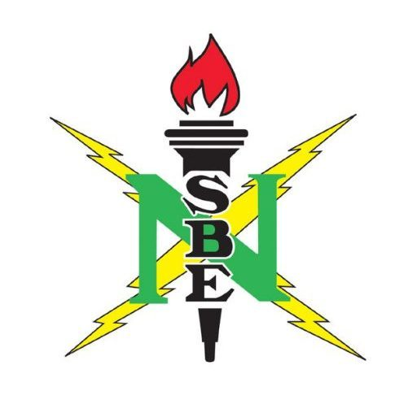

Leadership and Community Involvement
-
Association of Black Computer Scientists (January 2023-Present):

- ABCS President (2024-2025), Corporate Officer (2023-2024), Member
-
Reinforced the base of black CS majors at UT by providing mentoring,
networking, and growth opportunities.
-
Hosted events with companies to inspire and equip the next diverse
generation of thoughtful technologists.
-
National Society of Black Engineers (January 2023-Present):

- NSBE Telecommunications Chair (2023-2024), Member
-
Increased the number of culturally responsible black engineers by
roughly 15%.
-
Encouraged member engagement by organizing weekly newsletters and
populating the chapter website with resources.